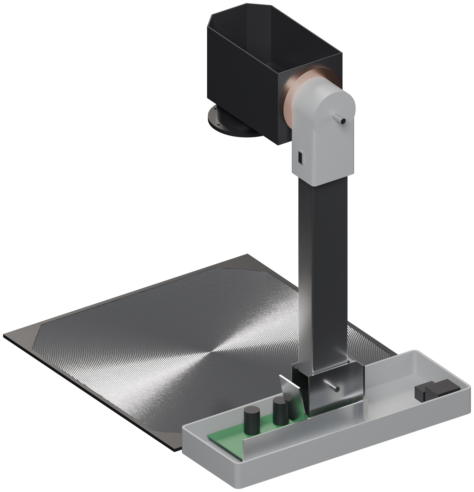
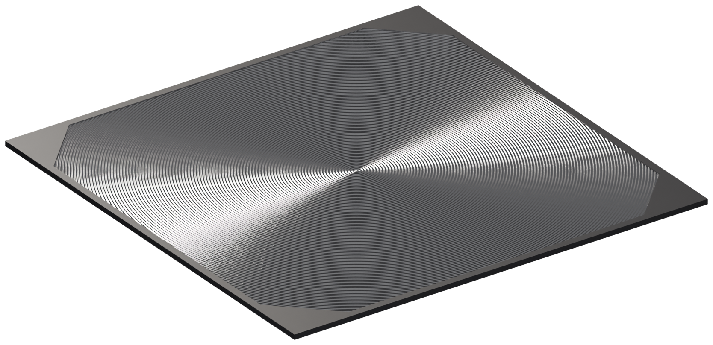
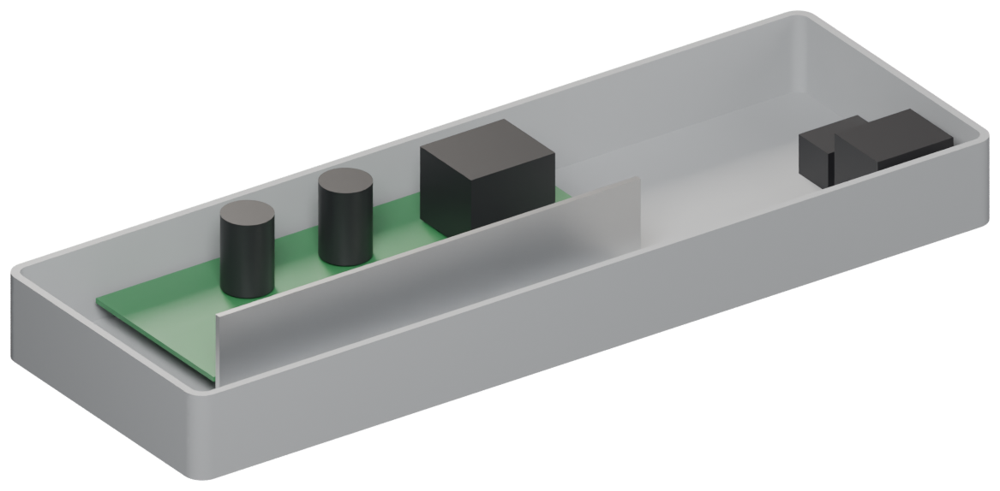
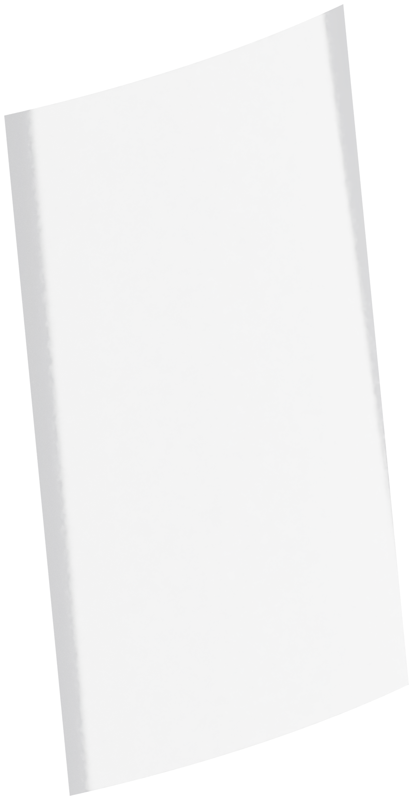
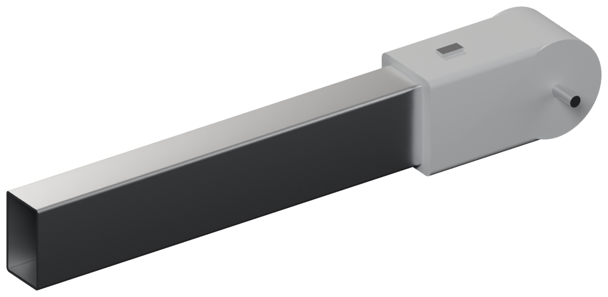
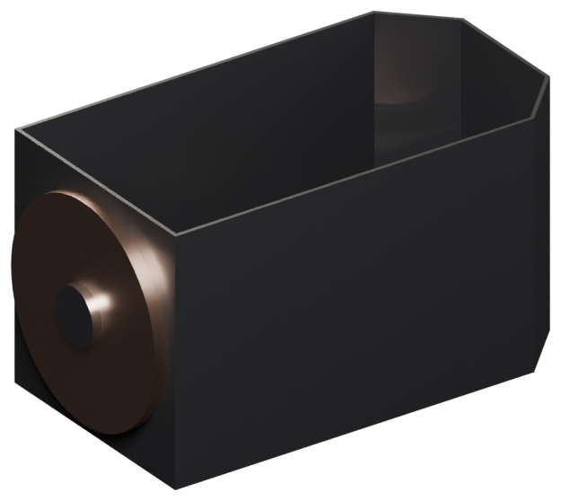
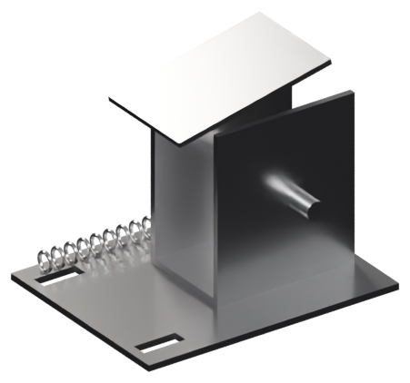
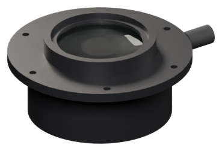
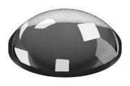
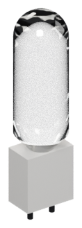

rekonstruksjon frå delane
ikkje målt

vindauge 285 · f 187
deleliste
aldri i sol

285 × 99 × 28
inntil ± 12
230 V: aldri kople til

306 × 535 × 0,2
inntil ± 70
frå monitoren, berre form

240 × 43 × 26
inntil ± 12

140 × 78 × 80
inntil ± 20
vifte 60, typeskilt

84 × 66 × 55
inntil ± 15

Ø 77 × 28 · f ≈ 280
inntil ± 10
aldri i sol

Ø 41 × 14
inntil ± 6
aldri i sol

Ø 20 × 77
deleliste